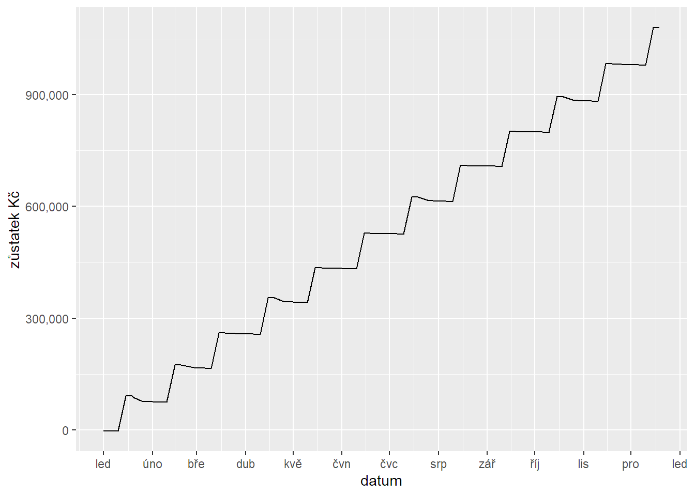
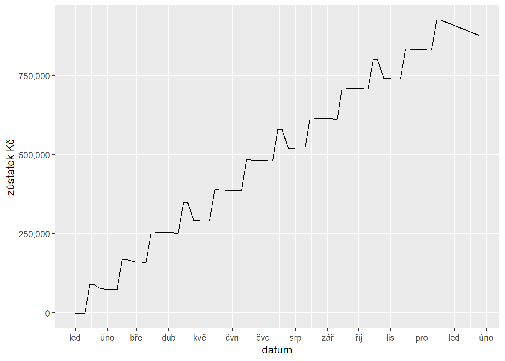

7 Souvislé příklady
Gratuluju, dostali jste se až do poslední kapitoly, kde vám ukážu pár souvislých příkladů propojujících látku celé knihy.
7.1 Poznámky z porady
Na schůzce s klientem jsem si do Keepu v telefonu poznamenal úkoly, které mám udělat. Ke každému úkolu jsem si napsal odhad náročnosti v hodinách a požadovaný termín. Vypadá to nějak takhle:
- Rychlá analýza UX a designu: 8 hodin, T 1.3.
- Klíčovka čeština: 16 hodin, T 15. 3.
- Klíčovka angličtina: 8 hodin, T 15. 3.
- Návrh obsahové strategie: 8 hodin, T 20.3.
- Příprava workshopu pro tým: 2 hodiny, T 1.4.Teď chci ocenit jednotlivé úkoly hodinovou sazbou a sečíst celkový čas i cenu. S tak malým seznamem to nejrychleji udělám ručně, ale kdyby byl delší, můžu si práci usnadnit spreadsheetem nebo R. Vybral jsem si R :-)
7.1.1 Které balíčky budu potřebovat
Kromě tidyverse ještě lubridate, což je chytrý balíček na práci s časovými údaji – datum, čas, doba, časový interval apod.
library(tidyverse)
library(lubridate)7.1.2 Načtení textu
Text si zkopíruju z Keepu a načtu ho do proměnné input funkcí read_lines, která vrátí znakový vektor jednotlivých řádků. Parametr skip říká, že se má přeskočit první (prázdný) řádek, parametr locale určuje kódování znaků a je potřeba jen ve Windows. Na Macu nebo Linuxu ho tam nedávejte.
input <- read_lines("
- Rychlá analýza UX a designu: 8 hodin, T 1.3.
- Klíčovka čeština: 16 hodin, T 15. 3.
- Klíčovka angličtina: 8 hodin, T 15. 3.
- Návrh obsahové strategie: 8 hodin, T 20.3.
- Příprava workshopu pro tým: 2 hodiny, T 1.4.
", skip = 1, locale = locale(encoding = "Windows-1250"))Zkontroluju si, jestli se řádky podařilo správně načíst:
input## [1] " - Rychlá analýza UX a designu: 8 hodin, T 1.3."
## [2] " - Klíčovka čeština: 16 hodin, T 15. 3."
## [3] " - Klíčovka angličtina: 8 hodin, T 15. 3."
## [4] " - Návrh obsahové strategie: 8 hodin, T 20.3."
## [5] " - Příprava workshopu pro tým: 2 hodiny, T 1.4."Podařilo, takže mohu vytvořit data frame.
7.1.3 Převod na data
Vytvořím data frame a v něm řádky rozdělím na samostatné proměnné (sloupce). Pak přidám hodinovou sazbu a dopočítám cenu. Nejprve ukážu celý postup a pak ho vysvětlím.
df <-
data.frame(input) |>
extract(
col = 1,
into = c("task", "hours", "day", "month"),
regex = " - ([^:]+): ([0-9]+).+T ([0-9]+).+([0-9]+)",
convert = TRUE
) |>
mutate(
deadline = make_date(year(today()), month, day),
rate = 2500,
price = hours * rate
) |>
select(task, hours, price, deadline)Povedlo se?
df7.1.3.1 Podrobný výklad postupu
Pokud je vám až sem všechno jasné, tohle přeskočte. Pro ostatní popíšu postup vytvoření data framu podrobněji.
Nejprve jsem vytvořil data frame s jedním sloupcem obsahujícím řádky původního vstupního textu. Posloužila mi funkce data.frame ze základního R.
data.frame(input)Pomocí funkce extract z balíčku tidyr (součást tidyverse) jsem jednotlivé řádky rozdělil na víc sloupců. Použil jsem k tomu tyto parametry:
col: říká, který sloupec bude vstupní; zde jen pořadovým číslem, ale jde i názvem či jinak.into: znakovým vektorem udává názvy nových sloupců, které funce vytvoří.regex: regulární výraz, který určuje obsah nových sloupců pomocí skupin v kulatých závorkách.convert: hodnota TRUE říká, že se mají číselné hodnoty převést z řetězce na čísla.
data.frame(input) |>
extract(
col = 1,
into = c("task", "hours", "day", "month"),
regex = " - ([^:]+): ([0-9]+).+T ([0-9]+).+([0-9]+)",
convert = TRUE
)Pomocí funkce mutate z balíčku dplyr (součást tidyverse) jsem přidal tři další vypočítané sloupce deadline, rate a price. Pro deadline jsem použil funkci make_date z baličku lubridate, která jako parametry chce rok (ten jsem vzal jako rok z dnešního data: year(today())), měsíc a den. Ostatní je asi jasné.
data.frame(input) |>
extract(
col = 1,
into = c("task", "hours", "day", "month"),
regex = " - ([^:]+): ([0-9]+).+T ([0-9]+).+([0-9]+)",
convert = TRUE
) |>
mutate(
deadline = make_date(year(today()), month, day),
rate = 2500,
price = hours * rate
)Funkcí select už jen vyberu sloupce, které chci skutečně zařadit do výsledného data framu.
data.frame(input) |>
extract(
col = 1,
into = c("task", "hours", "day", "month"),
regex = " - ([^:]+): ([0-9]+).+T ([0-9]+).+([0-9]+)",
convert = TRUE
) |>
mutate(
deadline = make_date(year(today()), month, day),
rate = 2500,
price = hours * rate
) |>
select(task, hours, price, deadline)A nakonec celý výsledek na prvním řádku uložím do proměnné df.
df <-
data.frame(input) |>
extract(
col = 1,
into = c("task", "hours", "day", "month"),
regex = " - ([^:]+): ([0-9]+).+T ([0-9]+).+([0-9]+)",
convert = TRUE
) |>
mutate(
deadline = make_date(year(today()), month, day),
rate = 2500,
price = hours * rate
) |>
select(task, hours, price, deadline)7.2 Roční rozpočet freelancera
Pracujete na volné noze, klientům fakturujete vždy na konci měsíce odpracované hodiny jednotnou hodinovou sazbou, máte nějaké opakující se výdaje, z nichž některé jsou v cizí měně, a jste plátci DPH. Chcete si sestavit roční finanční plán.
7.2.1 Které balíčky budou potřeba
Kromě již známých tidyverse a lubridate to bude priceR, který umí načíst měnové kurzy.
library(tidyverse)
library(lubridate)
library(priceR)7.2.2 Kurzovní lístek
Protože budu mít ve výdajích zahraniční měny, stáhnu si nejprve aktuální kurzy CZK funkcí exchange_rate_latest z balíčku priceR. Výsledný kurzový lístek si uložím do objektu exchange_rates a již známou funkcí glimpse se podívám, jak vypadá.
exchange_rates <- exchange_rate_latest("CZK")## Daily CZK exchange rate as at end of day 2022-03-24 GMTexchange_rates |> glimpse()## Rows: 169
## Columns: 2
## $ currency <fct> AED, AFN, ALL, AMD, ANG, AOA, ARS, AUD, AWG, ~
## $ one_czk_is_equivalent_to <dbl> 0.163272, 3.879839, 4.955139, 21.647285, 0.07~7.2.3 Plán výdajů
Všechny výdaje si sepíšu do přehledné tabulky s těmito sloupci:
- name – název položky,
- cost – částka bez DPH,
- cur – měna,
- vatr – sazba DPH,
- period – za jaké období se výdaj opakuje; může být ‘month’ (měsíc), ‘quarter’ (čtvrtletí), nebo ‘year’ (rok),
- month – číslo měsíce v roce, ve kterém poprvé zaplatím,
- day – číslo dne v měsíci, ve kterém zaplatím.
costs <- tribble(
~name, ~cost, ~cur, ~vatr, ~period, ~month, ~day,
"Účetnictví", 9300.00, "CZK", 0, "quarter", 1, 25,
"O2", 1650.31, "CZK", 21, "month", 1, 1,
"T-Mobile", 948.35, "CZK", 21, "month", 1, 10,
"Toggl", 10.00, "USD", 0, "month", 1, 6,
"Fakturoid", 5280.00, "CZK", 21, "year", 3, 1,
"Basecamp", 12.00, "USD", 0, "month", 1, 19,
"Screaming Frog", 149.00, "GBP", 0, "year", 1, 20
)
costsZ tabulky costs si nyní vygeneruji tabulku cost_by_date, která bude v daném roce obsahovat jednotlivé výdaje v den, kdy je zaplatím.
Postupně provedu tyto kroky:
- Do objektu
yearsi uložím rok, pro který chci plán spočítat. - Funkcí
left_joinspojím tabulku nákladů s odpovídajícími kurzy z kurzovního lístku (je to dost podobné excelovské funkciVLOOKUPresp.SVYHLEDAT). - Protože má kurz v kurzovním lístku strašně dlouhé jméno, přejmenuju ho funkcí
renamena kratší. - Pomocí
mutatespočítám cenu v českých korunách a DPH. - Pomocí
mutatevytvořím sloupecdate, který bude na každém řádku obsahovat celou posloupnost dat plateb jako seznam (list). - Funkcí
unnest_longertyto seznamy dat plateb rozložím na samostatné řádky. - A nakonec už jen funkcí
selectvyberu sloupce, které chci zahrnout do výsledku.
year <- 2022
costs_by_date <- costs |>
left_join(exchange_rates, by = c("cur" = "currency")) |>
rename(ex_rate = last_col()) |>
mutate(
cost_czk = round(cost / ex_rate, 2),
vat = round(cost_czk * (vatr / 100), 2)
) |>
rowwise() |>
mutate(
date = list(seq(make_date(year, month, day), make_date(year, 12, 31), by = period))
) |>
ungroup() |>
unnest_longer(date) |>
select(date, name, cost_czk, vat)
costs_by_date7.2.4 Plán příjmů
Nyní vytvořím tabulku odhadovaných výnosů revenue_by_date. Bude se jednat o měsíční příjmy, které dostanu v průměru okolo 15. dne následujícího měsíce. Vypočítají se z odhadu fakturovaných hodin vynásobených hodinovou sazbou. Počet fakturovaných hodin bude náhodně fluktuovat +/- 5 hodin okolo průměru. DPH je 21 %.
average_hours <- 100
hourly_rate <- 800
revenue_by_date <- tibble(
date = seq(make_date(year, 1, 15), length = 12, by = "month"),
revenue = round(runif(12, average_hours - 5, average_hours + 5)) * hourly_rate,
vat = revenue * 0.21
)
revenue_by_date7.2.5 Spojený plán příjmů a výdajů
Zbývá spočítat cash flow a hezky ho zobrazit. Postup už podrobně vysvětlovat nebudu. Jakmile uvidíte funkci, kterou neznáte, dejte si na ni kurzor, zmáčkněte F1 a vše potřebné se dozvíte z nápovědy.
costs_by_date |>
transmute(
date,
cash_flow = -(cost_czk + vat)
) |>
bind_rows(
revenue_by_date |>
transmute(
date,
cash_flow = revenue + vat
)
) |>
group_by(date) |>
summarise(cash_flow = sum(cash_flow)) |>
ggplot(aes(x = date, y = cumsum(cash_flow))) +
geom_line() +
scale_y_continuous(labels = scales::comma) +
scale_x_date(date_breaks = "month", date_labels = "%b") +
labs(x = "datum", y = "zůstatek Kč")
Má to jednu vadu, že? Nejsou tam odvody DPH. Tak ještě jednou a pro jistotu to rozdělím do dvou kroků, ať to jde lépe zkontrolovat.
Nejprve tabulka cash flow podle dní:
cash_flow_by_date <- costs_by_date |>
transmute(
date,
name,
cash_flow = -(cost_czk + vat)
) |>
bind_rows(
revenue_by_date |>
transmute(
date,
name = "příjem",
cash_flow = revenue + vat
)
) |>
# Zde přidám DPH na vstupu
bind_rows(
costs_by_date |>
group_by(
date = quarter(date, type = "date_last") + 25,
name = "DPH na vstupu"
) |>
summarise(cash_flow = sum(vat))
) |>
# Zde přidám DPH na výstupu
bind_rows(
revenue_by_date |>
group_by(
date = quarter(date, type = "date_last") + 25,
name = "DPH na výstupu"
) |>
summarise(cash_flow = -sum(vat))
)## `summarise()` has grouped output by 'date'. You can override using the
## `.groups` argument.
## `summarise()` has grouped output by 'date'. You can override using the
## `.groups` argument.cash_flow_by_dateA nakonec graf:
cash_flow_by_date |>
group_by(date) |>
summarise(cash_flow = sum(cash_flow)) |>
ggplot(aes(x = date, y = cumsum(cash_flow))) +
geom_line() +
scale_y_continuous(labels = scales::comma) +
scale_x_date(date_breaks = "month", date_labels = "%b") +
labs(x = "datum", y = "zůstatek Kč")
A to je všechno :-)